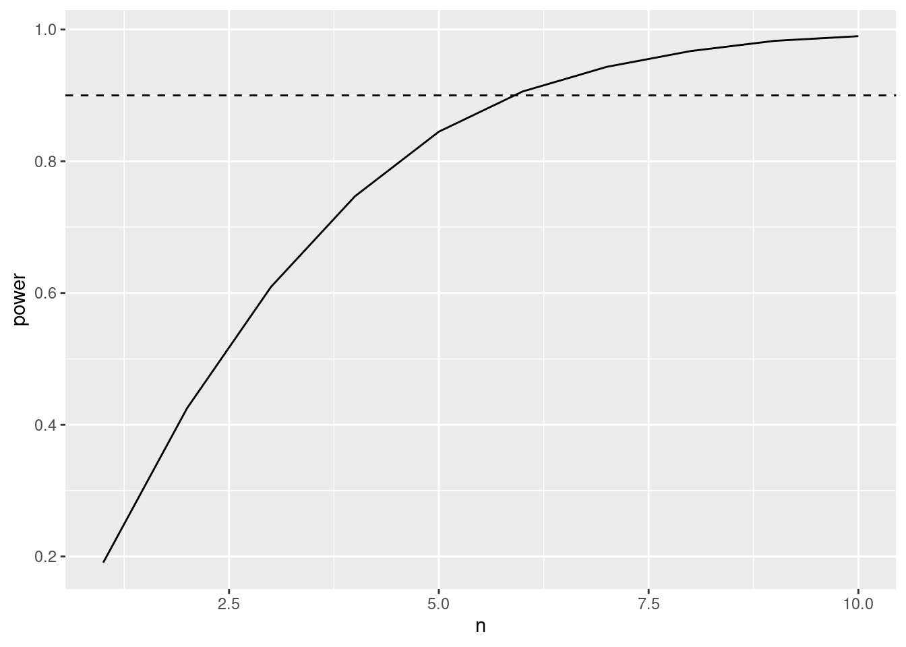
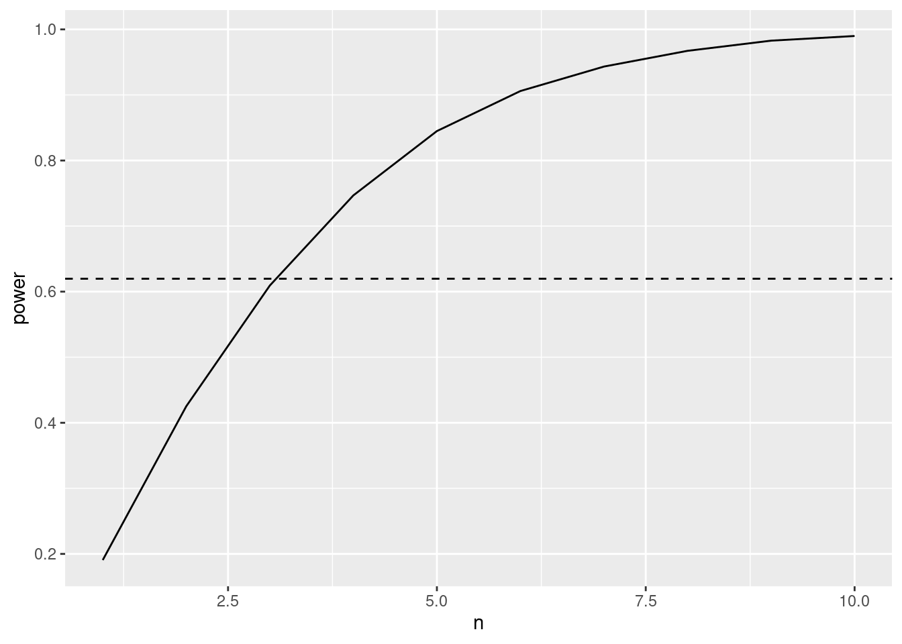

Puromycin data
Data on the velocity of an enzymatic reaction were obtained by
Treloar (1974).
The number of counts per minute of radioactive product from the reaction
was measured as a function of substrate concentration in parts per
million (ppm) and from these counts the initial rate (or velocity) of
the reaction was calculated (counts/min/min). The experiment was
conducted once with the enzyme treated with Puromycin, and once with the
enzyme untreated.
Here, we will focus again on the enzyme treated data.
data(Puromycin)
Puromycin <- Puromycin %>%
filter(state=="treated")
There was a linear association between the log10 substrate
concentration and the reaction rate
Puromycin %>%
ggplot(aes(x=conc %>% log10,y=rate)) +
geom_point() +
stat_smooth(method = "loess",col="red") +
stat_smooth(method='lm',col="black") +
ylab("Reaction Rate (counts/min)") +
xlab("log10(Substrate concentration) (log10 ppm)")
Note, that the researchers have chosen 6 different substrate
concentrations and conducted an experiment where they assessed the
initial reaction rate twice for every concentration.
Use the data to calculate the power to pick up an association
that is as least as strong as the association you observed in the
dataset when using an experiment with the same design.
Use the data to calculate the power to pick up an association
where the reaction rate increases on average with 10 counts/min when the
substrate concentration is 10 times higher (\(\beta_1=10\)).
Use the data to calculate the number of repeats you need for each
concentration to pick up an association where the reaction rate
increases on average with 10 counts/min when the substrate concentration
is 10 times higher with a power of at least 90%. (\(\beta_1=10\))
Suppose that you would setup an experiment with a design similar
with the same concentrations as in the puromycin dataset and you have
the following restriction: you need to use each concentration at least
once and can setup at most 12 reactions, how would you choose your
design points? Calculate the power for this design when the effect size
is 10 counts/min per 10 times increase in the substrate concentration
(\(\beta_1=10\)).
Simulation
function
Function to simulate data similar to that of our experiment under our
model assumptions.
simFast <- function(form, data, betas, sd, contrasts, alpha = .05, nSim = 10000)
{
ySim <- rnorm(nrow(data)*nSim,sd=sd)
dim(ySim) <-c(nrow(data),nSim)
design <- model.matrix(form, data)
ySim <- ySim + c(design %*%betas)
ySim <- t(ySim)
### Fitting
fitAll <- limma::lmFit(ySim,design)
### Inference
varUnscaled <- c(t(contrasts)%*%fitAll$cov.coefficients%*%contrasts)
contrasts <- fitAll$coefficients %*%contrasts
seContrasts <- varUnscaled^.5*fitAll$sigma
tstats <- contrasts/seContrasts
pvals <- pt(abs(tstats),fitAll$df.residual,lower.tail = FALSE)*2
return(mean(pvals < alpha))
}
Power to pick up the
same effect size as we observed in the data set with the same
design
mod1 <- lm(rate ~ conc %>% log10, Puromycin)
betas <- mod1$coefficients
nSim <- 10000
form <- ~ conc %>% log10
sd <- sigma(mod1)
contrast <- matrix(c(0,1),ncol=1)
rownames(contrast) <- names(mod1$coefficients)
alpha <- 0.05
power <- simFast(form, Puromycin, betas, sd, contrasts = contrast, alpha = alpha, nSim = nSim)
power
[1] 1
Power for \(\beta_1=10\)
mod1 <- lm(rate ~ conc %>% log10, Puromycin)
betas <- mod1$coefficients
betas[2] <- 10
nSim <- 10000
form <- ~ conc %>% log10
sd <- sigma(mod1)
contrast <- matrix(c(0,1),ncol=1)
rownames(contrast) <- names(mod1$coefficients)
alpha <- 0.05
power <- simFast(form, Puromycin, betas, sd, contrasts = contrast, alpha = alpha, nSim = nSim)
power
[1] 0.4223
The power to pick up a slope of \(\beta_1=10\) for this experiment is only
42.2%.
Calculate the number
of repeats needed per concentration to obtain a power of 90% to pick up
an effect of \(\beta_1=10\).
mod1 <- lm(rate ~ conc %>% log10, Puromycin)
concentrations <- Puromycin %>%
pull(conc) %>%
unique
betas <- mod1$coefficients
betas[2] <- 10
nSim <- 10000
form <- ~ conc %>% log10
sd <- sigma(mod1)
contrast <- matrix(c(0,1),ncol=1)
rownames(contrast) <- names(mod1$coefficients)
alpha <- 0.05
powers <- data.frame(n = 1:10, power=NA)
for (i in 1:10)
{
simData <- data.frame(conc = rep(concentrations,each=i))
powers[i,2] <- simFast(form, simData, betas, sd, contrasts = contrast, alpha = alpha, nSim = nSim)
}
powers %>%
ggplot(aes(n,power)) +
geom_line() +
geom_hline(yintercept = .9, lty = 2)

We need 6 repeats for each concentration to obtain a power above
90%.
Optimal design with 12
reactions
concentrations <- Puromycin %>%
pull(conc) %>%
unique
betas <- mod1$coefficients
betas[2] <- 10
nSim <- 10000
form <- ~ conc %>% log10
sd <- sigma(mod1)
contrast <- matrix(c(0,1),ncol=1)
rownames(contrast) <- names(mod1$coefficients)
alpha <- 0.05
simData <- data.frame(conc = c(concentrations,rep(min(concentrations),3),rep(max(concentrations),3)))
simData
powerOpt <- simFast(form, simData, betas, sd, contrasts = contrast, alpha = alpha, nSim = nSim)
powerOpt
[1] 0.6081
Note that the power for a design where we repeat each concentration 1
time and the minimum and maximum concentration 4 times is considerably
higher than that for the designs where we repeat all data points.
powers %>%
ggplot(aes(n,power)) +
geom_line() +
geom_hline(yintercept = powerOpt, lty = 2)

Indeed, the power for our optimal design with 12 reactions is as high
as the power for an experiment where you would repeat every
concentration 3 times for which we need to conduct 18 reactions!
LS0tCnRpdGxlOiAiRXhwZXJpbWVudGFsIERlc2lnbiBJSTogcmVwbGljYXRpb24gYW5kIHBvd2VyIGV4ZXJjaXNlIDIiCmF1dGhvcjogIkxpZXZlbiBDbGVtZW50ICYgQWxleGFuZHJlIFNlZ2VycyIKZGF0ZTogInN0YXRPbWljcywgR2hlbnQgVW5pdmVyc2l0eSAoaHR0cHM6Ly9zdGF0b21pY3MuZ2l0aHViLmlvKSIKb3V0cHV0OgogIGh0bWxfZG9jdW1lbnQ6CiAgICBjb2RlX2Rvd25sb2FkOiB5ZXMKICAgIHRoZW1lOiBjb3NtbwogICAgdG9jOiB5ZXMKICAgIHRvY19mbG9hdDogeWVzCiAgICBoaWdobGlnaHQ6IHRhbmdvCiAgICBudW1iZXJfc2VjdGlvbnM6IHllcwogIHBkZl9kb2N1bWVudDoKICAgIHRvYzogdHJ1ZQogICAgbnVtYmVyX3NlY3Rpb25zOiB0cnVlCiAgICBsYXRleF9lbmdpbmU6IHhlbGF0ZXgKLS0tCgo8YSByZWw9ImxpY2Vuc2UiIGhyZWY9Imh0dHBzOi8vY3JlYXRpdmVjb21tb25zLm9yZy9saWNlbnNlcy9ieS1uYy1zYS80LjAiPjxpbWcgYWx0PSJDcmVhdGl2ZSBDb21tb25zIExpY2Vuc2UiIHN0eWxlPSJib3JkZXItd2lkdGg6MCIgc3JjPSJodHRwczovL2kuY3JlYXRpdmVjb21tb25zLm9yZy9sL2J5LW5jLXNhLzQuMC84OHgzMS5wbmciIC8+PC9hPgoKYGBge3Igc2V0dXAsIGluY2x1ZGU9RkFMU0V9CmtuaXRyOjpvcHRzX2NodW5rJHNldChpbmNsdWRlID0gVFJVRSwgY29tbWVudCA9IE5BLCBlY2hvID0gVFJVRSwKICAgICAgICAgICAgICAgICAgICAgIG1lc3NhZ2UgPSBGQUxTRSwgd2FybmluZyA9IEZBTFNFKQpgYGAKCmBgYHtyfQpsaWJyYXJ5KHRpZHl2ZXJzZSkKYGBgCgojIFB1cm9teWNpbiBkYXRhCgpEYXRhIG9uIHRoZSB2ZWxvY2l0eSBvZiBhbiBlbnp5bWF0aWMgcmVhY3Rpb24gd2VyZSBvYnRhaW5lZCBieSBUcmVsb2FyICgxOTc0KS4gIApUaGUgbnVtYmVyIG9mIGNvdW50cyBwZXIgbWludXRlIG9mIHJhZGlvYWN0aXZlIHByb2R1Y3QgZnJvbSB0aGUgcmVhY3Rpb24gd2FzIG1lYXN1cmVkIGFzIGEgZnVuY3Rpb24gb2Ygc3Vic3RyYXRlIGNvbmNlbnRyYXRpb24gaW4gcGFydHMgcGVyIG1pbGxpb24gKHBwbSkgYW5kIGZyb20gdGhlc2UgY291bnRzIHRoZSBpbml0aWFsIHJhdGUgKG9yIHZlbG9jaXR5KSBvZiB0aGUgcmVhY3Rpb24gd2FzIGNhbGN1bGF0ZWQgKGNvdW50cy9taW4vbWluKS4gIFRoZSBleHBlcmltZW50IHdhcyBjb25kdWN0ZWQgb25jZSB3aXRoIHRoZSBlbnp5bWUgdHJlYXRlZCB3aXRoIFB1cm9teWNpbiwgYW5kIG9uY2Ugd2l0aCB0aGUgZW56eW1lIHVudHJlYXRlZC4KCkhlcmUsIHdlIHdpbGwgZm9jdXMgYWdhaW4gb24gdGhlIGVuenltZSB0cmVhdGVkIGRhdGEuIAoKYGBge3J9CmRhdGEoUHVyb215Y2luKQpQdXJvbXljaW4gPC0gUHVyb215Y2luICU+JSAKICBmaWx0ZXIoc3RhdGU9PSJ0cmVhdGVkIikKYGBgCgpUaGVyZSB3YXMgYSBsaW5lYXIgYXNzb2NpYXRpb24gYmV0d2VlbiB0aGUgbG9nMTAgc3Vic3RyYXRlIGNvbmNlbnRyYXRpb24gYW5kIHRoZSByZWFjdGlvbiByYXRlIAoKCmBgYHtyfQpQdXJvbXljaW4gICU+JQogIGdncGxvdChhZXMoeD1jb25jICU+JSBsb2cxMCx5PXJhdGUpKSArCiAgZ2VvbV9wb2ludCgpICsgCiAgc3RhdF9zbW9vdGgobWV0aG9kID0gImxvZXNzIixjb2w9InJlZCIpICsgCiAgc3RhdF9zbW9vdGgobWV0aG9kPSdsbScsY29sPSJibGFjayIpICsKICB5bGFiKCJSZWFjdGlvbiBSYXRlIChjb3VudHMvbWluKSIpICsKICB4bGFiKCJsb2cxMChTdWJzdHJhdGUgY29uY2VudHJhdGlvbikgKGxvZzEwIHBwbSkiKQpgYGAKCk5vdGUsIHRoYXQgdGhlIHJlc2VhcmNoZXJzIGhhdmUgY2hvc2VuIDYgZGlmZmVyZW50IHN1YnN0cmF0ZSBjb25jZW50cmF0aW9ucyBhbmQgY29uZHVjdGVkIGFuIGV4cGVyaW1lbnQgd2hlcmUgdGhleSBhc3Nlc3NlZCB0aGUgaW5pdGlhbCByZWFjdGlvbiByYXRlIHR3aWNlIGZvciBldmVyeSBjb25jZW50cmF0aW9uLiAKCjEuIFVzZSB0aGUgZGF0YSB0byBjYWxjdWxhdGUgdGhlIHBvd2VyIHRvIHBpY2sgdXAgYW4gYXNzb2NpYXRpb24gdGhhdCBpcyBhcyBsZWFzdCBhcyBzdHJvbmcgYXMgdGhlIGFzc29jaWF0aW9uIHlvdSBvYnNlcnZlZCBpbiB0aGUgZGF0YXNldCB3aGVuIHVzaW5nIGFuIGV4cGVyaW1lbnQgd2l0aCB0aGUgc2FtZSBkZXNpZ24uIAoKMi4gVXNlIHRoZSBkYXRhIHRvIGNhbGN1bGF0ZSB0aGUgcG93ZXIgdG8gcGljayB1cCBhbiBhc3NvY2lhdGlvbiB3aGVyZSB0aGUgcmVhY3Rpb24gcmF0ZSBpbmNyZWFzZXMgb24gYXZlcmFnZSB3aXRoIDEwIGNvdW50cy9taW4gd2hlbiB0aGUgc3Vic3RyYXRlIGNvbmNlbnRyYXRpb24gaXMgMTAgdGltZXMgaGlnaGVyICgkXGJldGFfMT0xMCQpLgoKMy4gVXNlIHRoZSBkYXRhIHRvIGNhbGN1bGF0ZSB0aGUgbnVtYmVyIG9mIHJlcGVhdHMgeW91IG5lZWQgZm9yIGVhY2ggY29uY2VudHJhdGlvbiB0byBwaWNrIHVwIGFuIGFzc29jaWF0aW9uIHdoZXJlIHRoZSByZWFjdGlvbiByYXRlIGluY3JlYXNlcyBvbiBhdmVyYWdlIHdpdGggMTAgY291bnRzL21pbiB3aGVuIHRoZSBzdWJzdHJhdGUgY29uY2VudHJhdGlvbiBpcyAxMCB0aW1lcyBoaWdoZXIgd2l0aCBhIHBvd2VyIG9mIGF0IGxlYXN0IDkwJS4gKCRcYmV0YV8xPTEwJCkKCjQuIFN1cHBvc2UgdGhhdCB5b3Ugd291bGQgc2V0dXAgYW4gZXhwZXJpbWVudCB3aXRoIGEgZGVzaWduIHNpbWlsYXIgd2l0aCB0aGUgc2FtZSBjb25jZW50cmF0aW9ucyBhcyBpbiB0aGUgcHVyb215Y2luIGRhdGFzZXQgYW5kIHlvdSBoYXZlIHRoZSBmb2xsb3dpbmcgcmVzdHJpY3Rpb246IHlvdSBuZWVkIHRvIHVzZSBlYWNoIGNvbmNlbnRyYXRpb24gYXQgbGVhc3Qgb25jZSBhbmQgY2FuIHNldHVwIGF0IG1vc3QgMTIgcmVhY3Rpb25zLCBob3cgd291bGQgeW91IGNob29zZSB5b3VyIGRlc2lnbiBwb2ludHM/IENhbGN1bGF0ZSB0aGUgcG93ZXIgZm9yIHRoaXMgZGVzaWduIHdoZW4gdGhlIGVmZmVjdCBzaXplIGlzIDEwIGNvdW50cy9taW4gcGVyIDEwIHRpbWVzIGluY3JlYXNlIGluIHRoZSBzdWJzdHJhdGUgY29uY2VudHJhdGlvbiAoJFxiZXRhXzE9MTAkKS4KCiMjIFNpbXVsYXRpb24gZnVuY3Rpb24KCkZ1bmN0aW9uIHRvIHNpbXVsYXRlIGRhdGEgc2ltaWxhciB0byB0aGF0IG9mIG91ciBleHBlcmltZW50IHVuZGVyIG91ciBtb2RlbCBhc3N1bXB0aW9ucy4gCgpgYGB7cn0Kc2ltRmFzdCA8LSBmdW5jdGlvbihmb3JtLCBkYXRhLCBiZXRhcywgc2QsIGNvbnRyYXN0cywgYWxwaGEgPSAuMDUsIG5TaW0gPSAxMDAwMCkKewogICAgeVNpbSA8LSBybm9ybShucm93KGRhdGEpKm5TaW0sc2Q9c2QpCiAgICBkaW0oeVNpbSkgPC1jKG5yb3coZGF0YSksblNpbSkKICAgIGRlc2lnbiA8LSBtb2RlbC5tYXRyaXgoZm9ybSwgZGF0YSkKICAgIHlTaW0gPC0geVNpbSArIGMoZGVzaWduICUqJWJldGFzKQogICAgeVNpbSA8LSB0KHlTaW0pCiAgCiAgICAjIyMgRml0dGluZwogICAgZml0QWxsIDwtIGxpbW1hOjpsbUZpdCh5U2ltLGRlc2lnbikKICAKICAgICMjIyBJbmZlcmVuY2UKICAgIHZhclVuc2NhbGVkIDwtIGModChjb250cmFzdHMpJSolZml0QWxsJGNvdi5jb2VmZmljaWVudHMlKiVjb250cmFzdHMpCiAgICBjb250cmFzdHMgPC0gZml0QWxsJGNvZWZmaWNpZW50cyAlKiVjb250cmFzdHMKICAgIHNlQ29udHJhc3RzIDwtIHZhclVuc2NhbGVkXi41KmZpdEFsbCRzaWdtYQogICAgdHN0YXRzIDwtIGNvbnRyYXN0cy9zZUNvbnRyYXN0cwogICAgcHZhbHMgPC0gcHQoYWJzKHRzdGF0cyksZml0QWxsJGRmLnJlc2lkdWFsLGxvd2VyLnRhaWwgPSBGQUxTRSkqMgogICAgcmV0dXJuKG1lYW4ocHZhbHMgPCBhbHBoYSkpCn0KYGBgCgojIyBQb3dlciB0byBwaWNrIHVwIHRoZSBzYW1lIGVmZmVjdCBzaXplIGFzIHdlIG9ic2VydmVkIGluIHRoZSBkYXRhIHNldCB3aXRoIHRoZSBzYW1lIGRlc2lnbiAKCmBgYHtyfQptb2QxIDwtIGxtKHJhdGUgfiBjb25jICU+JSBsb2cxMCwgUHVyb215Y2luKQpiZXRhcyA8LSBtb2QxJGNvZWZmaWNpZW50cwpuU2ltIDwtIDEwMDAwCmZvcm0gPC0gfiBjb25jICU+JSBsb2cxMCAKc2QgPC0gc2lnbWEobW9kMSkKY29udHJhc3QgPC0gbWF0cml4KGMoMCwxKSxuY29sPTEpCnJvd25hbWVzKGNvbnRyYXN0KSA8LSBuYW1lcyhtb2QxJGNvZWZmaWNpZW50cykKYWxwaGEgPC0gMC4wNSAKCnBvd2VyIDwtIHNpbUZhc3QoZm9ybSwgUHVyb215Y2luLCBiZXRhcywgc2QsIGNvbnRyYXN0cyA9IGNvbnRyYXN0LCBhbHBoYSA9IGFscGhhLCBuU2ltID0gblNpbSkKcG93ZXIKYGBgCgojIyBQb3dlciBmb3IgJFxiZXRhXzE9MTAkCgpgYGB7cn0KbW9kMSA8LSBsbShyYXRlIH4gY29uYyAlPiUgbG9nMTAsIFB1cm9teWNpbikKYmV0YXMgPC0gbW9kMSRjb2VmZmljaWVudHMKYmV0YXNbMl0gPC0gMTAKblNpbSA8LSAxMDAwMApmb3JtIDwtIH4gY29uYyAlPiUgbG9nMTAgCnNkIDwtIHNpZ21hKG1vZDEpCmNvbnRyYXN0IDwtIG1hdHJpeChjKDAsMSksbmNvbD0xKQpyb3duYW1lcyhjb250cmFzdCkgPC0gbmFtZXMobW9kMSRjb2VmZmljaWVudHMpCmFscGhhIDwtIDAuMDUgCgpwb3dlciA8LSBzaW1GYXN0KGZvcm0sIFB1cm9teWNpbiwgYmV0YXMsIHNkLCBjb250cmFzdHMgPSBjb250cmFzdCwgYWxwaGEgPSBhbHBoYSwgblNpbSA9IG5TaW0pCnBvd2VyCmBgYAoKVGhlIHBvd2VyIHRvIHBpY2sgdXAgYSBzbG9wZSBvZiAkXGJldGFfMT0xMCQgZm9yIHRoaXMgZXhwZXJpbWVudCBpcyBvbmx5IApgciByb3VuZChwb3dlcioxMDAsMSlgJS4gCgojIyBDYWxjdWxhdGUgdGhlIG51bWJlciBvZiByZXBlYXRzIG5lZWRlZCBwZXIgY29uY2VudHJhdGlvbiB0byBvYnRhaW4gYSBwb3dlciBvZiA5MCUgdG8gcGljayB1cCBhbiBlZmZlY3Qgb2YgJFxiZXRhXzE9MTAkLgoKCmBgYHtyfQptb2QxIDwtIGxtKHJhdGUgfiBjb25jICU+JSBsb2cxMCwgUHVyb215Y2luKQpjb25jZW50cmF0aW9ucyA8LSBQdXJvbXljaW4gJT4lIAogIHB1bGwoY29uYykgJT4lIAogIHVuaXF1ZQogIAogIApiZXRhcyA8LSBtb2QxJGNvZWZmaWNpZW50cwpiZXRhc1syXSA8LSAxMApuU2ltIDwtIDEwMDAwCmZvcm0gPC0gfiBjb25jICU+JSBsb2cxMCAKc2QgPC0gc2lnbWEobW9kMSkKY29udHJhc3QgPC0gbWF0cml4KGMoMCwxKSxuY29sPTEpCnJvd25hbWVzKGNvbnRyYXN0KSA8LSBuYW1lcyhtb2QxJGNvZWZmaWNpZW50cykKYWxwaGEgPC0gMC4wNSAKcG93ZXJzIDwtIGRhdGEuZnJhbWUobiA9IDE6MTAsIHBvd2VyPU5BKQpmb3IgKGkgaW4gMToxMCkKewogIHNpbURhdGEgPC0gZGF0YS5mcmFtZShjb25jID0gcmVwKGNvbmNlbnRyYXRpb25zLGVhY2g9aSkpCiAgcG93ZXJzW2ksMl0gPC0gc2ltRmFzdChmb3JtLCBzaW1EYXRhLCBiZXRhcywgc2QsIGNvbnRyYXN0cyA9IGNvbnRyYXN0LCBhbHBoYSA9IGFscGhhLCBuU2ltID0gblNpbSkKfQpwb3dlcnMgJT4lIAogIGdncGxvdChhZXMobixwb3dlcikpICsKICBnZW9tX2xpbmUoKSArCiAgZ2VvbV9obGluZSh5aW50ZXJjZXB0ID0gLjksIGx0eSA9IDIpCmBgYAoKV2UgbmVlZCBgciB3aGljaChwb3dlcnMkcG93ZXI+MC45KSAlPiVtaW5gIHJlcGVhdHMgZm9yIGVhY2ggY29uY2VudHJhdGlvbiB0byAKb2J0YWluIGEgcG93ZXIgYWJvdmUgOTAlLiAKCiMgT3B0aW1hbCBkZXNpZ24gd2l0aCAxMiByZWFjdGlvbnMgCgpgYGB7cn0KY29uY2VudHJhdGlvbnMgPC0gUHVyb215Y2luICU+JSAKICBwdWxsKGNvbmMpICU+JSAKICB1bmlxdWUKICAKYmV0YXMgPC0gbW9kMSRjb2VmZmljaWVudHMKYmV0YXNbMl0gPC0gMTAKblNpbSA8LSAxMDAwMApmb3JtIDwtIH4gY29uYyAlPiUgbG9nMTAgCnNkIDwtIHNpZ21hKG1vZDEpCmNvbnRyYXN0IDwtIG1hdHJpeChjKDAsMSksbmNvbD0xKQpyb3duYW1lcyhjb250cmFzdCkgPC0gbmFtZXMobW9kMSRjb2VmZmljaWVudHMpCmFscGhhIDwtIDAuMDUgCgpzaW1EYXRhIDwtIGRhdGEuZnJhbWUoY29uYyA9IGMoY29uY2VudHJhdGlvbnMscmVwKG1pbihjb25jZW50cmF0aW9ucyksMykscmVwKG1heChjb25jZW50cmF0aW9ucyksMykpKQpzaW1EYXRhCgpwb3dlck9wdCA8LSBzaW1GYXN0KGZvcm0sIHNpbURhdGEsIGJldGFzLCBzZCwgY29udHJhc3RzID0gY29udHJhc3QsIGFscGhhID0gYWxwaGEsIG5TaW0gPSBuU2ltKQpwb3dlck9wdApgYGAKCk5vdGUgdGhhdCB0aGUgcG93ZXIgZm9yIGEgZGVzaWduIHdoZXJlIHdlIHJlcGVhdCBlYWNoIGNvbmNlbnRyYXRpb24gMSB0aW1lIGFuZCAKdGhlIG1pbmltdW0gYW5kIG1heGltdW0gY29uY2VudHJhdGlvbiA0IHRpbWVzIGlzIGNvbnNpZGVyYWJseSBoaWdoZXIgdGhhbiB0aGF0IApmb3IgdGhlIGRlc2lnbnMgd2hlcmUgd2UgcmVwZWF0IGFsbCBkYXRhIHBvaW50cy4gCgpgYGB7cn0KcG93ZXJzICU+JSAKICBnZ3Bsb3QoYWVzKG4scG93ZXIpKSArCiAgZ2VvbV9saW5lKCkgKwogIGdlb21faGxpbmUoeWludGVyY2VwdCA9IHBvd2VyT3B0LCBsdHkgPSAyKQpgYGAKCkluZGVlZCwgdGhlIHBvd2VyIGZvciBvdXIgb3B0aW1hbCBkZXNpZ24gd2l0aCAxMiByZWFjdGlvbnMgaXMgYXMgaGlnaCBhcyB0aGUgCnBvd2VyIGZvciBhbiBleHBlcmltZW50IHdoZXJlIHlvdSB3b3VsZCByZXBlYXQgZXZlcnkgY29uY2VudHJhdGlvbiAzIHRpbWVzIGZvciAKd2hpY2ggd2UgbmVlZCB0byBjb25kdWN0IDE4IHJlYWN0aW9ucyEg